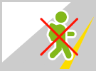
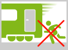
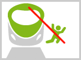
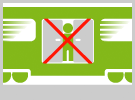
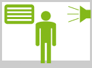
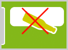
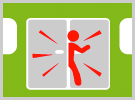
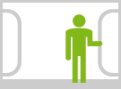
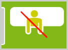

Il treno è il mezzo di trasporto più sicuro
Ma i rischi dovuti a disattenzioni o imprudenze sono in agguato e possono creare situazioni di pericolo per te e per gli altri viaggiatori. Segui con attenzione le regole di comportamento consigliate, e potrai goderti il viaggio nella massima tranquillità
Non oltrepassare la linea gialla
È fondamentale rispettare la distanza di sicurezza dal bordo del marciapiede, facendo attenzione ai treni in movimento, soprattutto quando si hanno bagagli ingombranti e zaini in spalla.
Non tentare di salire al volo
È vietato salire o tentare di aprire le porte quando il treno si muove. Salire nel momento della chiusura delle porte è molto pericoloso. Quando il treno è in partenza è vietato salire se il personale del treno è già salito a bordo
Non salire e non scendere dal treno al di fuori dei marciapiedi delle stazioni e non camminare lungo il binario
In stazione si deve sempre scendere e salire in corrispondenza dei marciapiedi. Dove questi terminano, il gradino della carrozza diventa alto da terra ed è quindi pericoloso provare a scendere o a risalire. E ricorda che è assolutamente proibito camminare lungo il binario.
Scendi solo quando il treno è completamente fermo in stazione
È vietato aprire le porte e scendere con il treno ancora in movimento,può creare rischi molto seri per chi lo fa.
Scendi dalla parte "giusta"
E' importante verificare che la porta da cui si scende si affacci sul marciapiede e non sul binario.
Ascolta i messaggi dell’altoparlante e tieni d’occhio i tabelloni.
Prestando attenzione alle comunicazioni dagli altoparlanti e agli avvisi sui display è possibile prepararsi all’arrivo del treno.
Non gettare oggetti dai finestrini.
È una elementare norma non solo di buona educazione ma anche di sicurezza, per evitare danni ai passeggeri di un treno in transito oppure alle persone in attesa sui marciapiedi delle stazioni.
Quando la porta inizia a chiudersi, non tentare di oltrepassarla
È una elementare norma non solo di buona educazione ma anche di sicurezza, per evitare danni ai passeggeri di un treno in transito oppure alle persone in attesa sui marciapiedi delle stazioni.
Sorreggiti ai sostegni
Quando si sale in treno, o quando si scende, è bene tenersi all’apposito corrimano interno. Durante il viaggio non sostare nei passaggi intercomunicanti tra un vagone e l’altro e non appoggiarti alle porte.
Non sporgerti dai finestrini
Lungo il percorso ferroviario, a distanza di sicurezza, ci sono pali, tralicci, pareti delle gallerie e alberi. Per chi si sporge dal finestrino del treno la distanza da questi oggetti si riduce e quindi diminuisce anche la sicurezza.
Il personale TrainApp è sempre a tua disposizione, se noti comportamenti contrari al buonsenso o altre situazioni anomale, non esitare ad avvisarlo.